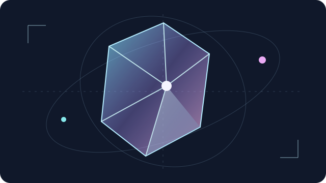
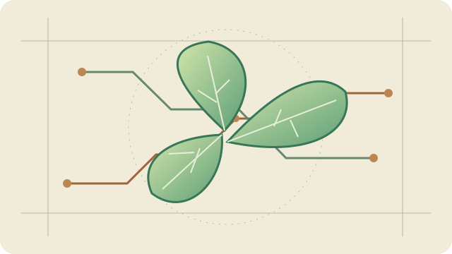
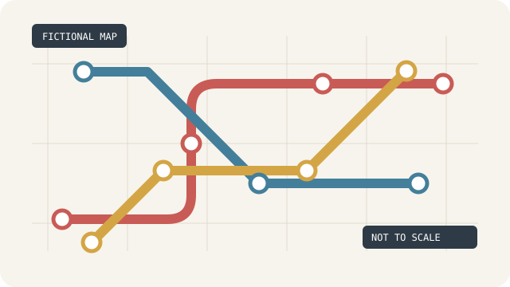
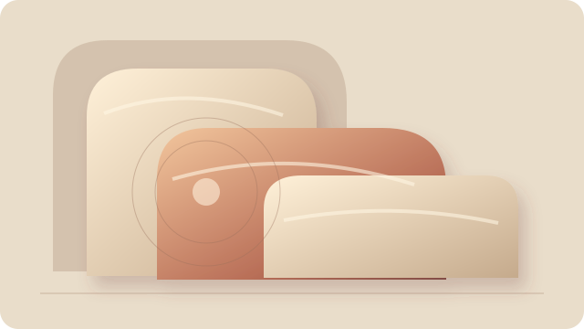

07
Objects of Memory
An imaginary artifact study, indexed by material and period.
Study / catalog / no. 07Original isolated CSS and SVG specimens only. No real sensor data, app state, APIs, or third-party media.
Static illustration; not a meter connected to real audio.
An imaginary artifact study, indexed by material and period.
Study / catalog / no. 07A CSS-only light treatment with real, selectable text.
A native disclosure with a folded-paper surface. No scripted state or persistence.



